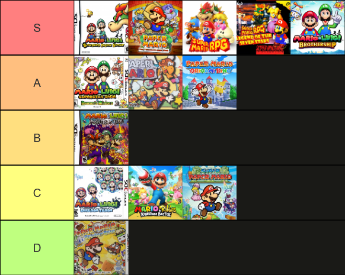
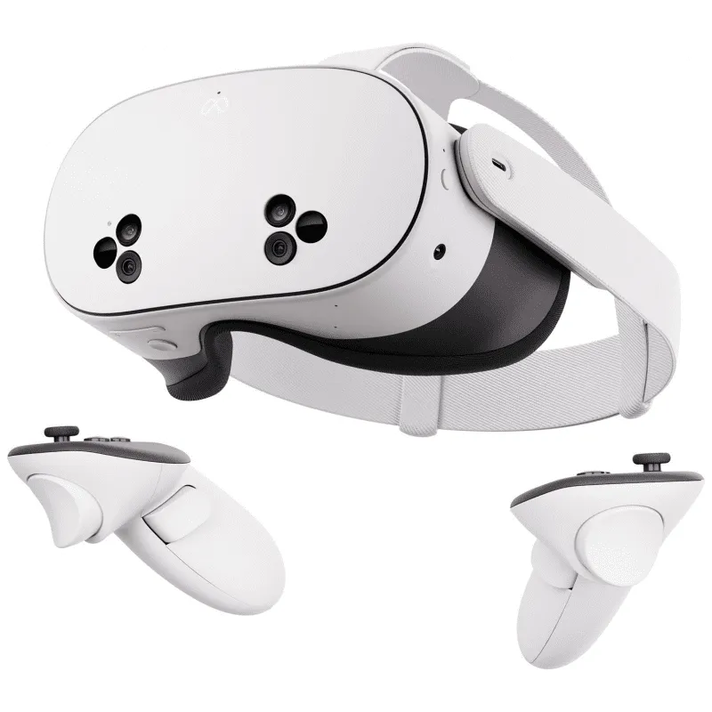

i got a vr headset! + christmas haul
2025 January 07merry christmas and happy new year everyone. ik it was a while ago but whatever. i've been sorting out job stuff (very unsuccessfully) and just enjoying the break using the stuff i got for christmas. speaking of christmas!
christmas haul!
i've gotten to the point now where i don't know what i want for christmas (until a week before). anything i would want are waaaay too expensive (new pc, office chair, ........a house). i did get a few things though.
first of all i got mario and luigi brothership and mario party jamboree which i've been playing since. both very fun and im almost about to beat brothership but it's veryyy long so im taking a break typing this. i think it's up there in mario rpgs. beating the first superboss like 20 levels underleveled was one of the most fun things i've done in an rpg
i got curious/distracted so i made a tier list. brothership might have recency bias. also ttyd and mario rpg are VERY close. (idk why the image quality is shit sorry)

^ this is what i felt like asking for mario games for christmas
i also got some clothes that i shopped for with family. i wore some of the clothes and my sister was like "no u have to wait for christmas to wear them" (not that serious) like okay but the clothes are just right there i thought i could
ok clickbait over im gonna talk about the point of the post
i got a meta quest 3S!
ew meta i know but the only other headset i would want is a valve index which is £1000+, so unless i start a gofundme i'm not getting one (first gofundme to earn 0 donations)
also i did not ask for a vr headset. my dad just bought me one. probably because i didn't fucking ask for anything cause im a stupid cunt. anyway i've always wanted one but never asked cause well they're like crazy expensive right? well the quest is only £290 so i guess he could afford it cause i didn't fucking ask for anything
da meta quest (review?)
so there's two part of the headset, there's the virtual world and the real world but there's virtual stuff too.
virtual reality
the quest has like a hub world with a bunch of worlds exactly like roblox (a reoccuring theme in vr...). u can join worlds and play games made by people and talk with voice chat. # i haven't really bothered with it cause 1. social anxiety and 2. i dont want to play in a world made by facebook. idk it just feels kinda fake? i don't know how to word it but why would i play this when i could just play roblox (trash vs garbage)
there's also the meta quest store! which i also don't want to bother with when steamvr exists! where all my other games are. i guess it's nice to play games wirelessly/good quality but steamlink is good enough. also i haven't mentioned it but yes u can play steam games on this thing which is what i'll be doing most likely. unfortunately my pc isn't good enough to run vr at a high refresh rate but i think it's better to use steam in the longrun.
i went on a tangent sorry i'll talk about the games i've played
beat saber

i mean it's beat saber i think everyone who has vr has played it. i think it's pretty okay but not my choice for a rhythm game to play serious in. u have to slash boxes in certain directions and lean left and right and duck n shit. it's probably better when u play custom songs u like and not the default songs. also u have to buy other songs which i think is stupid but whatever
i give it a 7/10! i don't see myself playing it for that much unfortunately.
rec room

i remember rec room back in the day u played these different sports like dodgeball and bowling and it's pretty cool. then i went on it now and it's just fucking roblox. AGAIN. it's just like the metaverse or whatever it's called. i still prefer it though since it feels less artificial and more like a video game. the original sports are still there which is nice but there's community games too. it would be fine but when i walked through the door a menu popped up instead of like... the lobby that i remembered. (also the same menu is literally in ur room like why). i'd prefer it if the official worlds were the main ones and the community worlds were a side thing. tangent aside it's pretty fun. a lot more games than the metaverse which is just a hangout basically.
8/10 i can see myself playing it more
gorilla tag

i don't even know how i discovered this game it might've been this video (volume warning)
when i first played it i was like this game is ass i can't even move. and then i looked up gorilla tag tutorials on youtube and there's videos with like 10M+ views like what the fuck? how is this game so popular? it's a vr game u need to pay like £300 to play it. anyway i've just started playing so i'm not that good at movement but i get why it's so popular. when ur moving fast (rarely) it's just so fun. also the name is a lie there's no tag only casual and infection. i haven't played infection cause i'm scared cause i'm ass but i could see myself playing it a lot. i've never played another game like it except cs surfing?
9/10 really cool but steep learning curve
theres more games i wanna try like bonelabs, job simulator, among us vr, powerwash vr, and this batman game that comes with the quest.
mixed reality
im ngl the cameras are complete dogshit. like it's so obvious you're looking at a camera it's so low quality. still cool though there's like menus in the real world (that sounds terrible actually). i didn't mention it earlier but u can switch between mixed reality and virtual reality with a button, so everything i say here applies to virtual aswell. so u can either control menus with the controllers or your hands!!!! as u might expect though using ur hands are very unresponsive so just use the controllers.
first encounters

i've only played one mixed reality game so far and it's this short one called first encounters where these knock off puffles break into ur house and u have to shoot them. it's really short and simple but it's pretty cool
6.5/10 basically just an arcade game
i tried browsing on the store for mixed reality but there's nothing. so sorry i have nothing to say but also idgaf
so yeah thats vr. i haven't used it much cause brothership is like 50 hours long but I SWEAR after i beat it i will play the mario party jamboree single player mode BUT AFTER i will play this thing more seriously my dad DID NOT WASTE HIS MONEY ON THIS im actually serious i've wanted one for a while so i'm happy i got one. might've been too negative on this one but yeah i like vr i wanna be stuck in it like sword art online. ok cya